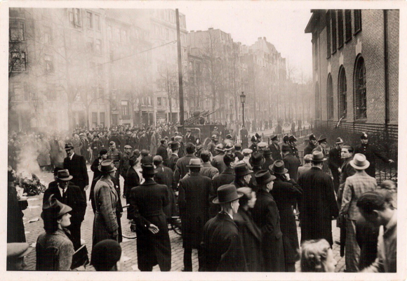
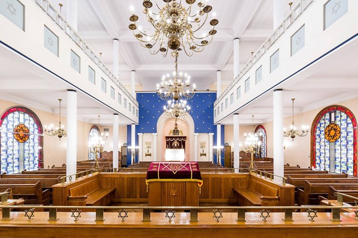

Introduction : La synagogue Van Den Nestlei, également connue aujourd'hui sous le nom de Synagogue Romi Goldmuntz, is one of Antwerp's most significant and grandest synagogues. It stands as a testament to the community's growth and prosperity during the interwar period.
Architecture et Histoire
Built in 1928, the synagogue features an imposing facade and a spacious, elegant interior. It was designed to accommodate the growing Jewish population in the surrounding neighborhood. The building survived the war and continues to serve as a central house of worship and community gathering place, hosting major events and prayer services for the Shomre Hadass community.
Le pogrom de 1941
Tragically, on April 14, 1941, the synagogue was targeted during the Antwerp pogrom. A violent mob attacked the building, setting it on fire while bystanders watched. This event stands as a somber reminder of the persecution faced by the community during the occupation.

Archives vidéo
Archives communautaires
